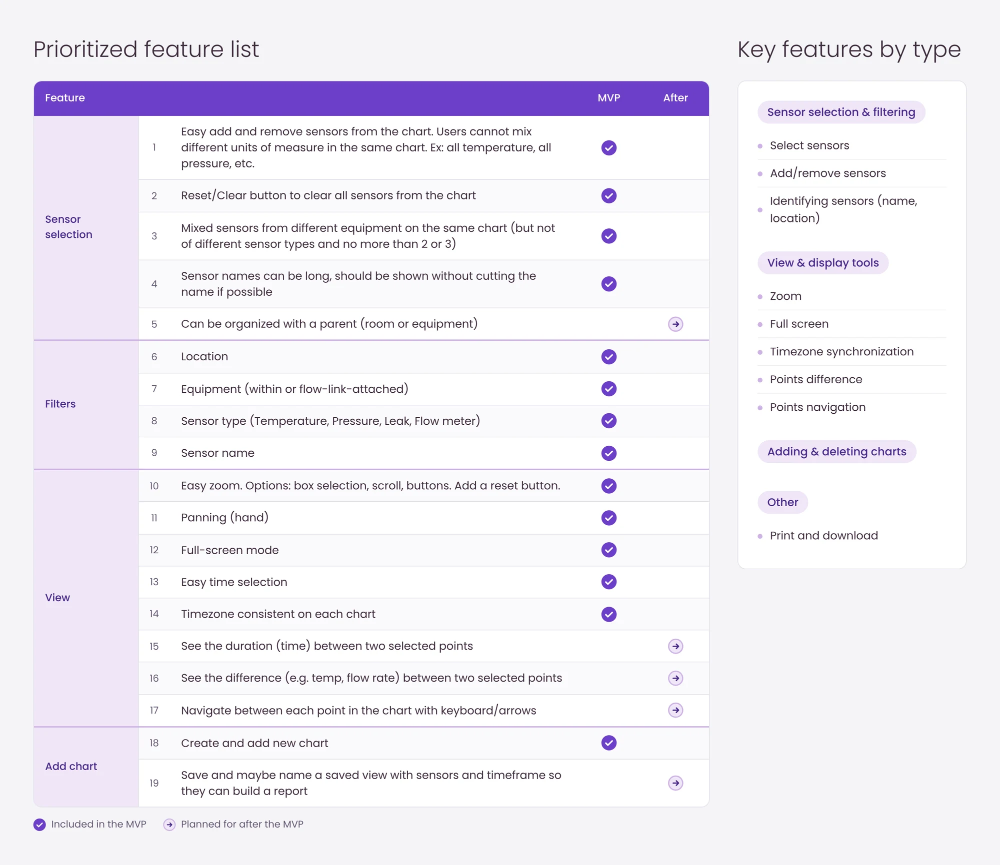
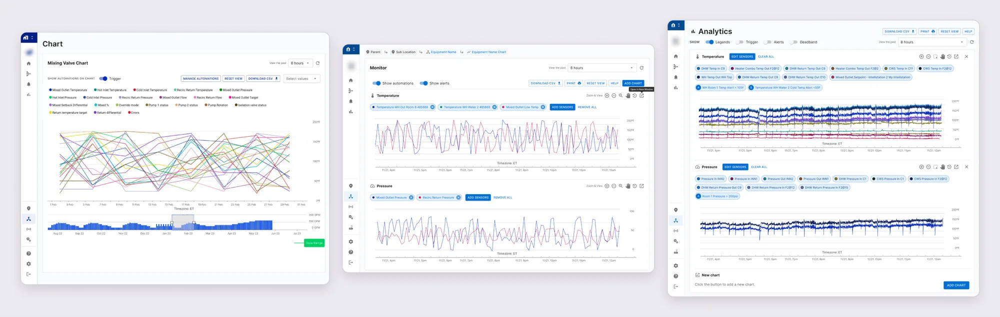
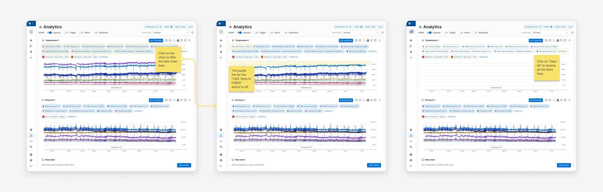
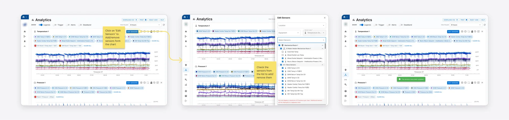
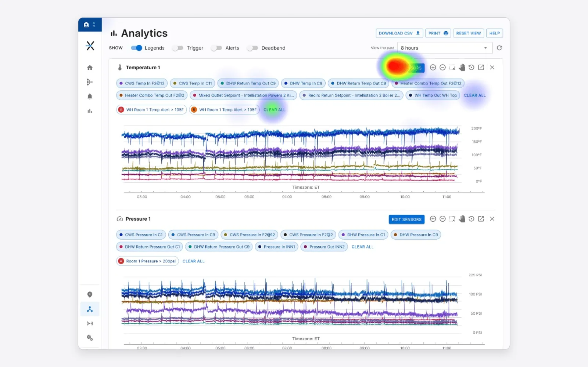
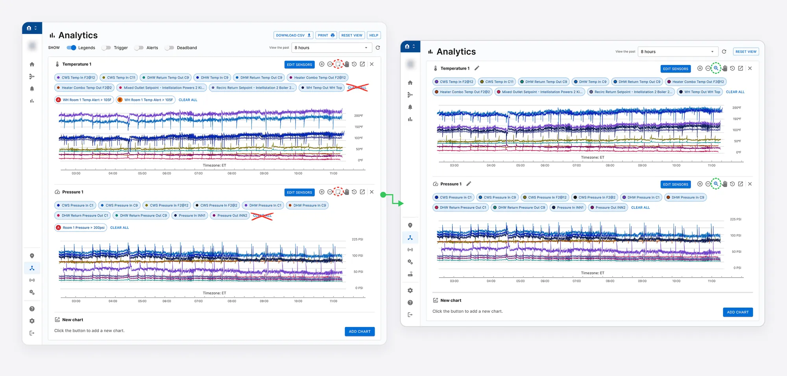
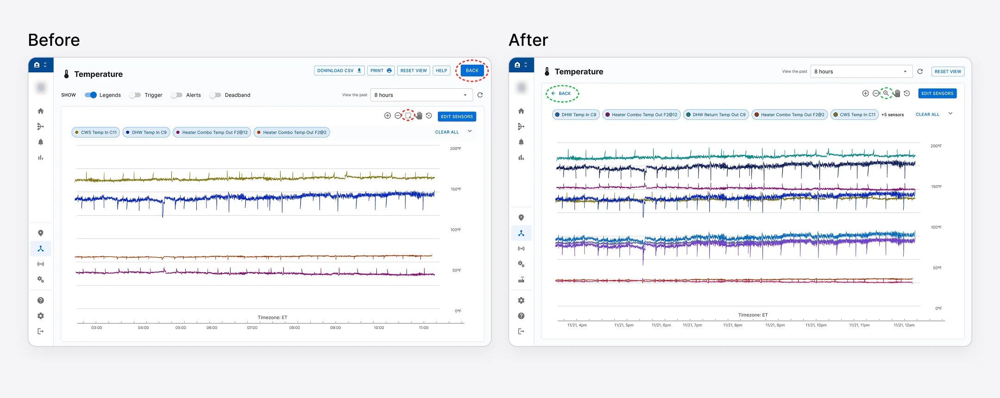

Overview
The company* is a global leader in water solutions for residential, industrial, municipal, and commercial use. Its 26 brands cover drainage, HVAC and hot water, plumbing and flow control, water quality, and rainwater harvesting.
*Company name, brands, and logos are hidden for confidentiality reasons.

Sales representatives use the platform's charting view to analyze sensor data across locations. They spot anomalies, find correlations, and build reports that reveal upsell opportunities.
The charts ran on Power BI. To cut costs and gain flexibility, the product owner decided to replace it with an in-house feature.
The new feature had to match Power BI's analysis capabilities, handle locations with more than 50 sensors, and fit tight agile sprints.
Problem statement
How might we replace Power BI with an in-house charting feature that is easier to use?
I led the UX design, research, and testing. I worked with the product owner on requirements, with developers on charting libraries, and with users through interviews and usability tests.
Outcomes
We launched the in-house charting feature with the improvements from usability testing. It removed the Power BI licensing dependency. Testing found 3 major issues, and we fixed them before dev handoff.
Design process
- Research: which features do users need?
- Benchmark: how do other tools handle large data volumes?
- Design: user flows and mockups
- Validate: usability testing
1. Research
I interviewed 3 customer success representatives about how they use Power BI. The product owner joined the sessions.

We discovered that users focused on two tasks in their analysis:
- Identifying anomalies to detect potential issues
- Exploring correlations between sensors to uncover trends or errors
Actual user quotes:
“If there are giant spikes, and if they were having very few spikes, or a few drops in this period of time... Now this next month, they're going lower. Why are they lower here? Did something happen? Is there a reason?”
“I always have a look at the big picture and then start drilling down. When you start isolating them in smaller time frames, things can become more obvious.”
“Say we have like 3 heaters and we started overlaying some sensors and you know two of them should be trending together. Two of them are not trending together and you can start finding errors and that's where you can start finding crossover.”
Some improvements they asked for include space for long sensor names, easy adding and removing of sensors, zoom, and a view of 15–20 sensors together.
From this research we defined the key tasks: compare sensors in a single view, zoom into abnormal data, and share charts with customers. We also set the essential features: sensor selection, zoom, and adding charts.
Not every request made it. We limited the view to 10 sensors instead of 20, because stress tests showed that more made the data illegible.

2. Benchmark
I analyzed internal tools and external ones: Power BI, Beestat, Yahoo Finance, and Room Alert. I looked at how they:
- Show multiple charts in one view
- Filter data points
- Add and remove data points
- Add and edit charts

3. User flows and mockups
I designed mockups for four flows:
- Default state: one chart per type (temperature, pressure, flow, leak)
- Filtering and visualization tools
- Adding and removing sensors
- Adding a new chart

Sensor filtering flow

Edit sensors flow

4. Validate: usability testing
I ran moderated tests in Maze with 5 internal users: 2 product managers and 3 customer success representatives. They completed four tasks:
- Filter chips: show only the “DHW Temp In C9” sensor.
- Edit sensors: add the “DHW Return Pressure Out C1” sensor.
- Full screen: open the first chart in full screen.
- Box selection: zoom in on “DHW Temp In C9” at 4:30 AM.

The tests found 3 major issues and 4 smaller ones. The major ones:
- Two “Clear” buttons: 4 of 5 users clicked the wrong one.
- Back button: 3 of 5 struggled to find it.
- Zoom icon: all 5 missed it.
We fixed them by removing the second “Clear” button, making “Back” more visible, enabling zoom by click-and-drag or click-and-scroll, adding a collapse option for filter chips, and changing the box selection icon.
Changes after testing - Multichart view

Changes after testing - Full screen popup

The 4 smaller issues stay open for follow-up:
- Zoom icon: keep testing it, even with the tooltip. Some users said it looks like a “minimize” icon.
- “Clear All” wording: test “Hide All” instead.
- Default charts: decide which charts to show, such as one of each type.
- Paid feature: make sure users understand why it is a paid feature.
Early research and fast testing helped us prioritize features and fit the sprint schedule. Fixing issues before handoff also reduced rework.
Thanks for reading!